Measure the problem. Compare possible responses. Test whether an idea can work in practice.
Looking outside tells us that ships are moving. It does not tell us how much they emit—or where the largest impacts occur.
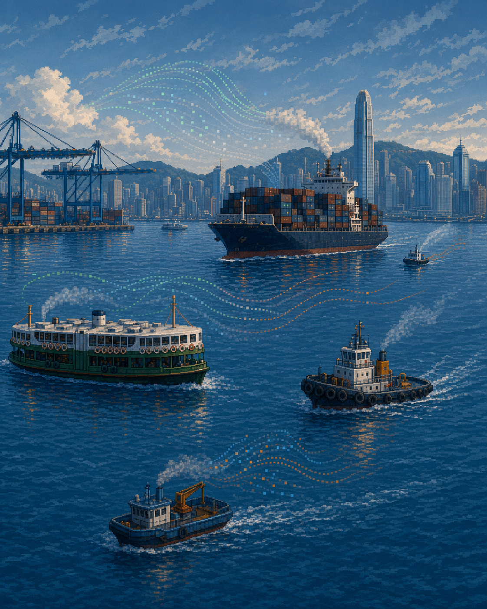
Ask three intuitive questions: How hard is it working? For how long? What fuel is it using?
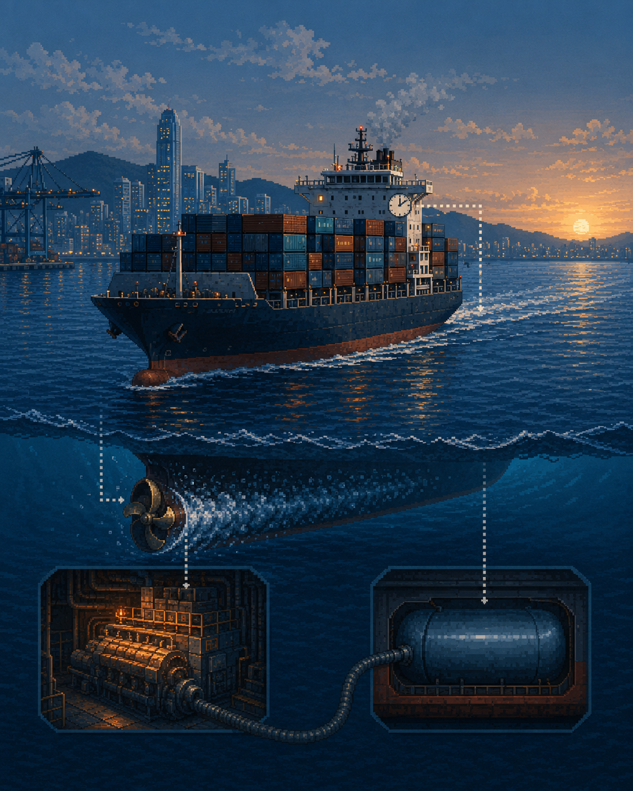
1,056 million tonnes of CO₂ from shipping in 2018—about 2.89% of global human-caused CO₂.
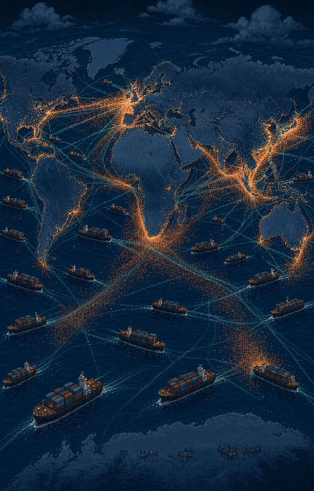
Efficiency, operational change, alternative fuels and port infrastructure can all contribute. No single option fits every route.
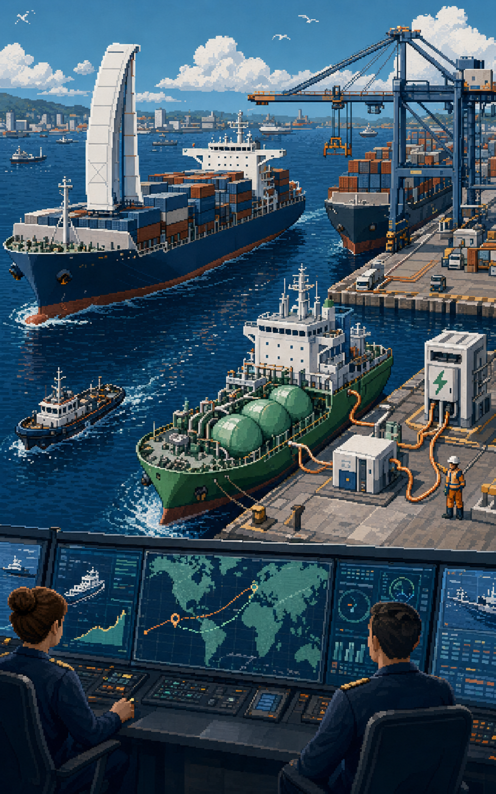
Cost, fuel supply, vessels, infrastructure, safety, regulation and demand must line up.
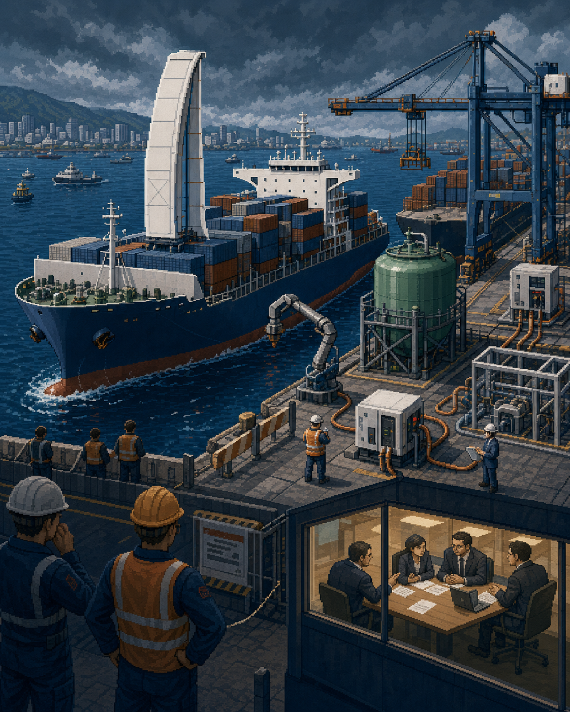
Focus willing ports, ship operators and fuel partners on decarbonising one shared route.
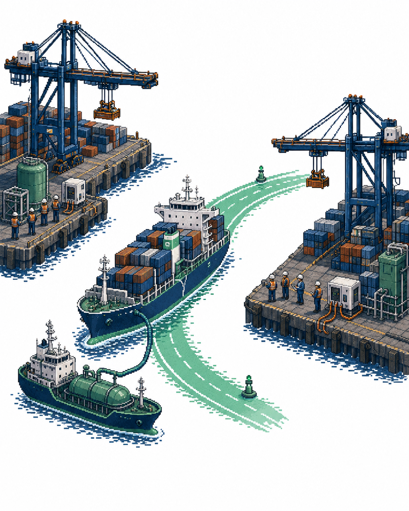
A viable corridor must connect cargo, vessels, fuel, ports, finance, standards and timing.
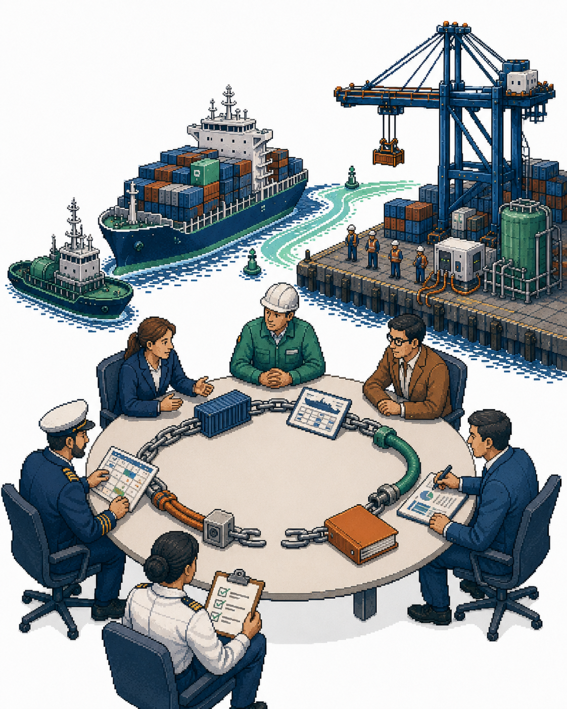
Data can reveal routes with real traffic, suitable vessels and commercial relationships strong enough to support a corridor.
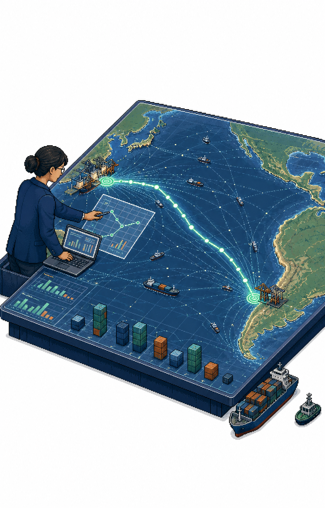
The Cherry Express connects Chilean cherry exports with Hong Kong and Mainland China markets. Existing cargo makes a corridor proposal more credible.
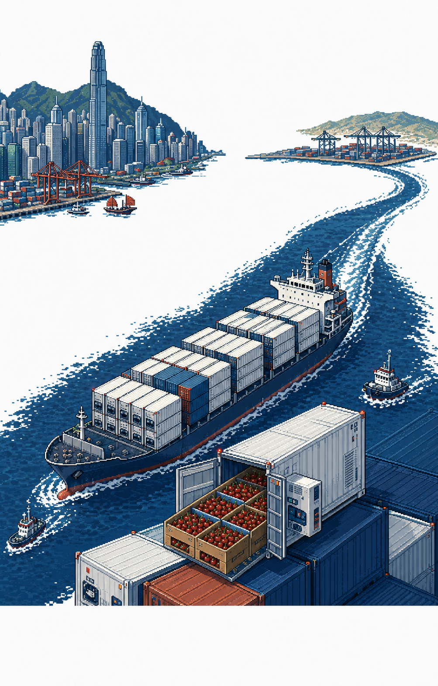
I presented the evidence in April 2025. On 17 November 2025, San Antonio became one of Hong Kong's first Partner Ports. The work continues.
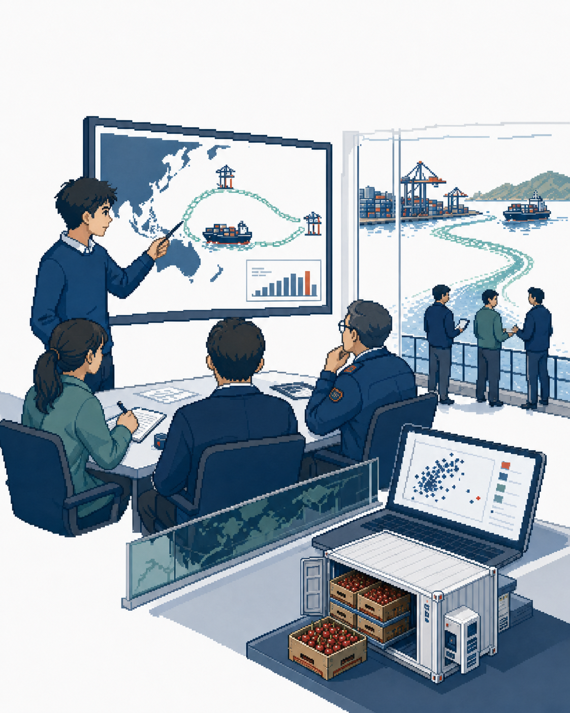
Evidence can identify an opportunity and reduce uncertainty. Implementation still depends on institutions, economics, politics, values—and people working together.
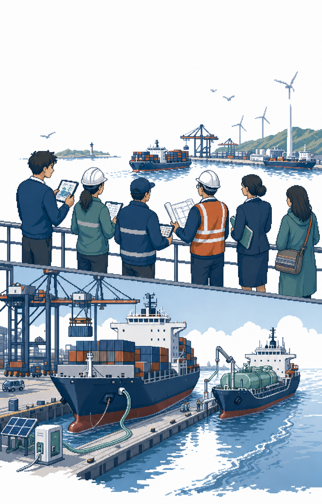